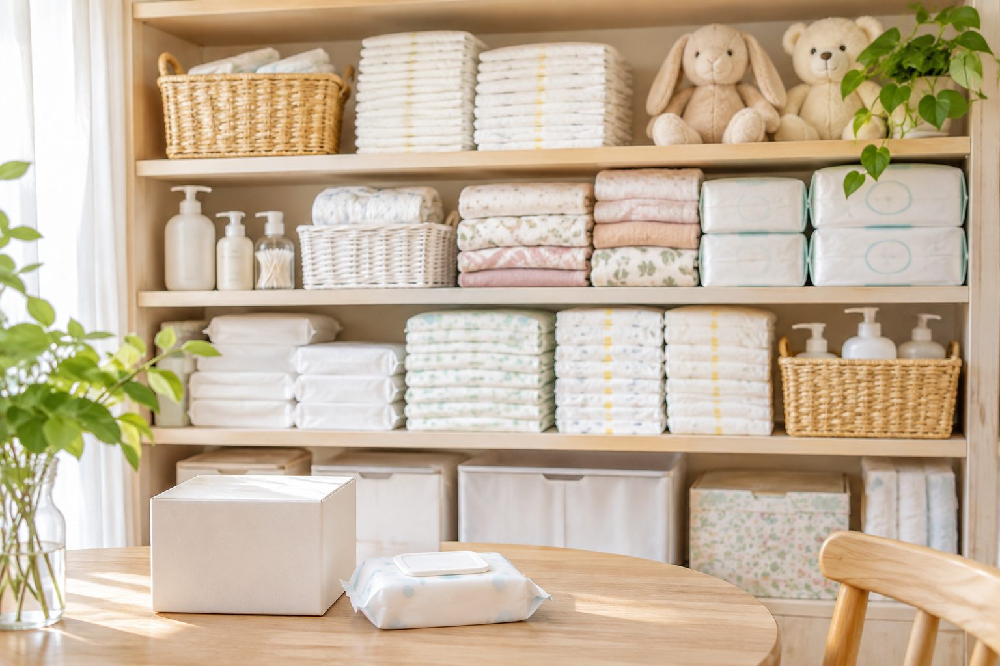
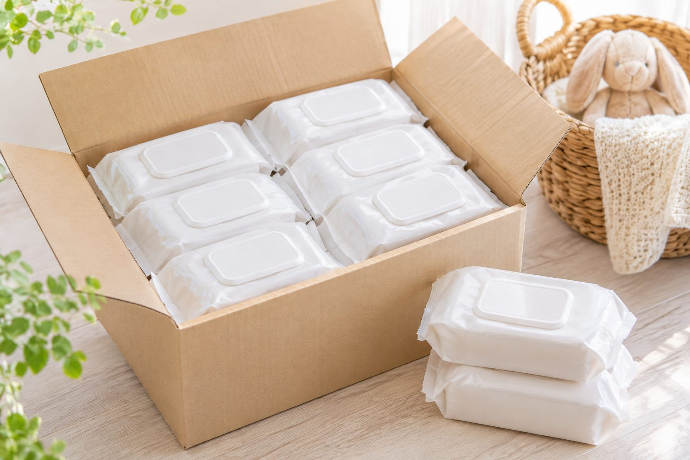
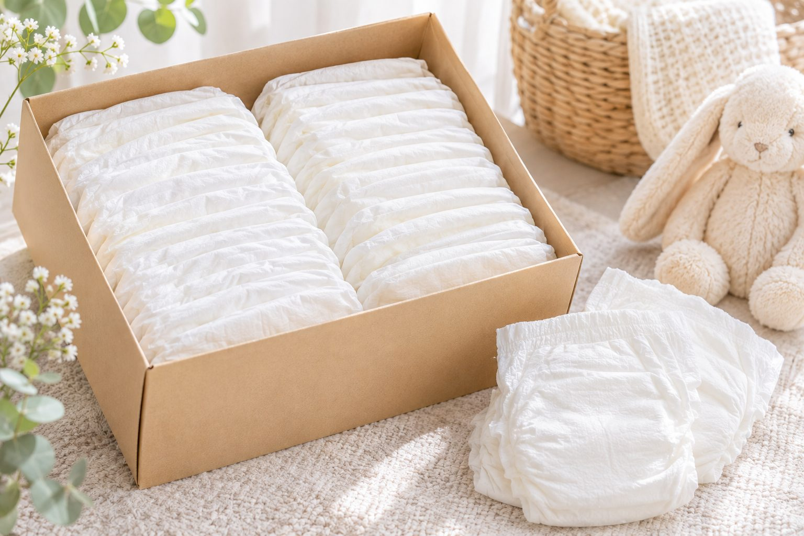
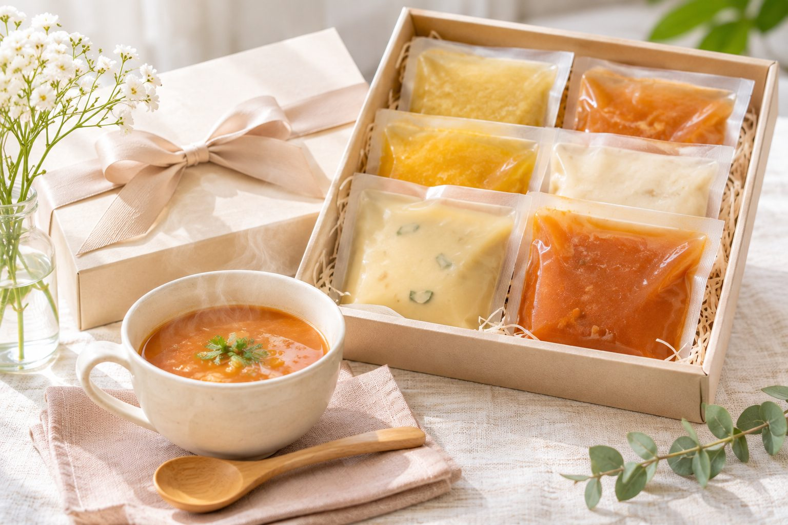
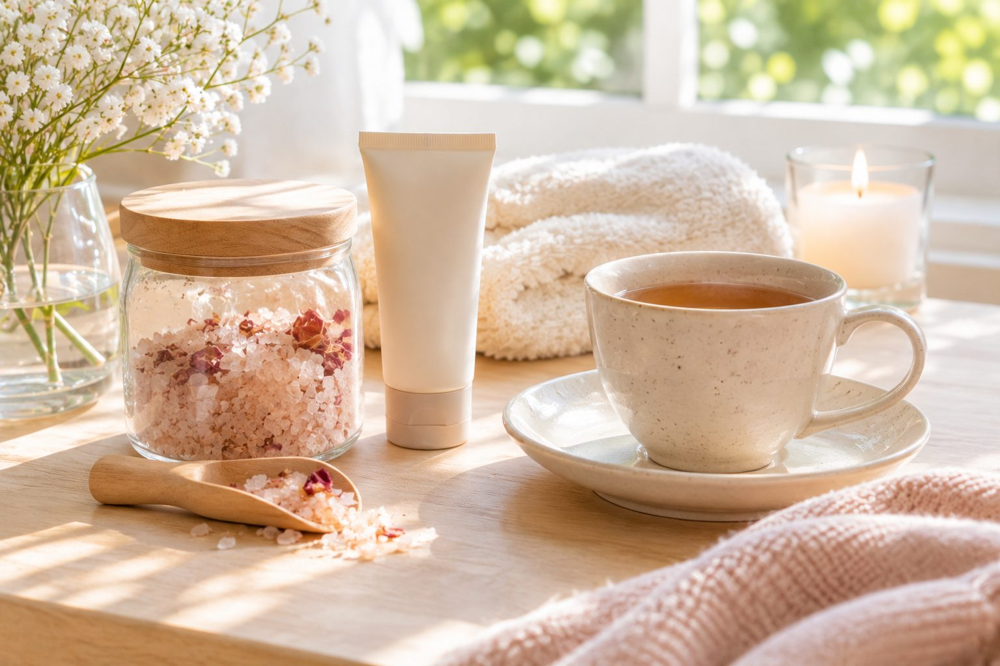
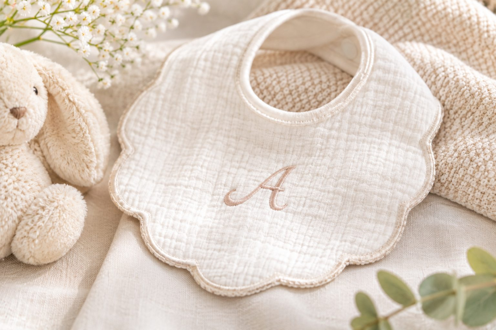
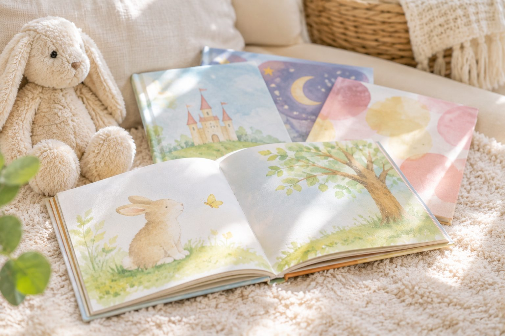
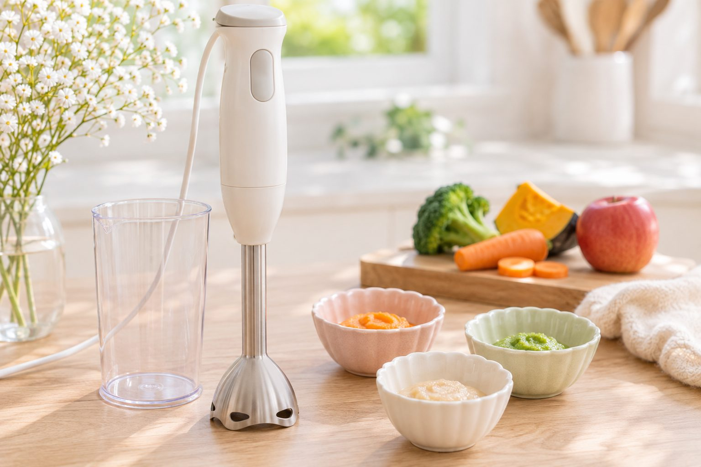
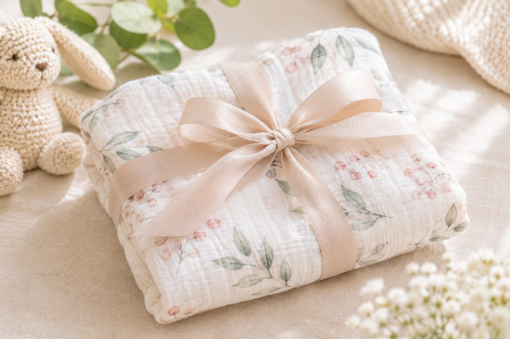
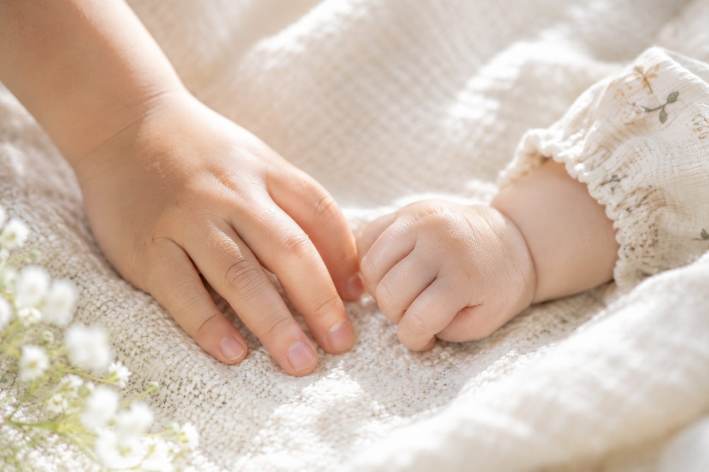

※この記事にはアフィリエイト広告（PR）が含まれます。記事内のリンクからご購入いただくと、当サイトに紹介料が支払われる場合があります。なお、商品の並び順や評価は広告の有無ではなく、下記の調査根拠に基づいて決めています。
二人目の出産祝いで、いちばんやってはいけないこと
結論から書きます。二人目の出産祝いで最も多い失敗は、「1人目のときに喜ばれたものを、もう一度贈ること」です。
出産祝いを受け取った女性400名を対象にした調査（リンベル調べ）で、1人目と2人目以降の「もらって嬉しかったもの」を比べると、顔ぶれがはっきり入れ替わります。
- ベビー服：1人目 36.8% → 2人目以降 26.3%に下落
- 育児用品（ベビーカーなど大型品）：35.0% → ランク外
- おもちゃ・絵本：28.8% → ランク外
- 商品券・ギフトカード：30.0% → 35.8%に上昇
- 消耗品（おむつ・おしりふき等）：33.0% → 35.3%に上昇
理由は単純で、2人目家庭には1人目の在庫とお下がりがあるからです。贈る側の声を集めても「だいたい揃っていると思うから、何をあげたらいいか分からない」「聞いても『何でも嬉しい』としか返ってこない」という迷いが繰り返し見られました。
そこでこの記事では、公開アンケート13件とX上の受け取り体験の具体投稿 約170件を集計し、二人目で評価が上がるもの・下がるものを、困った理由つきで紹介します。先に選び方の要点だけまとめると、次の3つです。
- 「モノ」ではなく「選べる・消える・ママ本人へ」に寄せる
- 消耗品は「何を使っているか」を聞ける間柄かどうかで選ぶものを変える
- 本体に上の子へのプチギフト（1,000〜3,000円）を添える

早見表：二人目の出産祝い 調査評価まとめ
リンクは各アイテムの本文内にあります（早見表内にはリンクを置いていません）。
| 順位 | アイテム | 調査での評価 | 価格帯の目安 | 特に合う相手 |
|---|---|---|---|---|
| 1 | ギフトカード・商品券 | リンベル調査で2人目35.8%（2位）。Xでは嬉しい10件／困った0件 | 3,000〜10,000円 | 全般・職場・遠方 |
| 2 | おしりふき（厚手・大量） | Xで嬉しい7件／困った0件。消耗品の中で唯一、困った側の具体投稿がゼロ | まとめ買いで数千円 | 全般 |
| 3 | 食事系ギフト | Xで嬉しい9件／困った0件 | 3,000〜5,000円台 | 里帰りなし・ワンオペ家庭 |
| 4 | 現金 | リンベル調査で不動の1位（49.8%） | 相場表参照 | 親族・親しい間柄 |
| 5 | 図書カード | Xで嬉しい4件／困った0件、うち3件が2人目 | 1,000〜5,000円 | 本のある家庭、同梱枠 |
| 6 | ママ本人へのギフト | リンベル調査で2人目5位に浮上（23.3%） | 2,000〜5,000円 | 用品が揃った家庭 |
| 7 | 紙おむつ | へその緒屋100人調査で「嬉しかった」1位 | ケースで数千円規模 | 銘柄を聞ける間柄 |
| 8 | 名入れの実用小物 | Xの名入れ言及10件がほぼ肯定 | 3,000〜8,000円 | 2人目全般 |
| 9 | 上の子へのプチギフト | 贈り方として約31.6%が実践（ハッピー・ノート調査） | 1,000〜3,000円 | 2人目の全ケース |
| 10 | 絵本 | Xで具体タイトルに支持が集中 | 1,500〜3,000円 | 上の子と読める家庭 |
| 11 | 離乳食・時短グッズ | はらぺこベビー調査で離乳食グッズが上位 | 3,000〜15,000円 | 所有状況を聞ける間柄 |
| 12 | おくるみ・ブランケット | Xで嬉しい6件／困った・混合5件 | 5,000〜8,000円 | 機能・意匠のある1枚を贈れる場合 |
| 13 | 実用品（マグ・水筒・食器） | Xで嬉しい3件／困った0件 | 2,000〜5,000円 | 先輩ママからの贈り物 |
| 14 | スリーパー | 10mois自社調査で30%・1位（自社データのみ） | 4,400円〜 | 秋冬生まれ |
| 15 | カタログギフト | GIFTFUL調査で嬉しかった4位（24%） | 3,000〜10,000円台 | 好みが分からない相手・目上 |
価格は各ストアで2026年11月14日に確認した時点のものです（Amazon掲載分は参考価格）。変動するため、購入前にリンク先でご確認ください。
A.「選べる」系 —— 被らず、好みも外さない
1位 ギフトカード・商品券

2人目で評価が最も伸びるカテゴリです。リンベル調査では1人目30.0%（5位）から2人目35.8%（2位）へ上昇し、Xの集計でも嬉しい10件に対して困った0件でした。「1人目は現物が嬉しかったけど、二人目はギフトカードがとても嬉しい」という、1人目と2人目の対比そのものが本人の言葉で語られています。
具体名では西松屋のギフトカード（店舗が近い家庭で「使い勝手がいい」という声）、アカチャンホンポの商品券、Amazonギフトカードが挙がりました。サイズ・好み・重複の全リスクを回避でき、その時点で必要なものに変えられるのが強さです。
向かない場面もあります。目上・年上の親戚には「味気ない」と受け取られることがあるため、その場合は品物かカタログギフト（15位）を。金額がそのまま伝わるので、メッセージカードを添えるのが定番の配慮です。
5位 図書カード
目立たない優等生です。Xでは嬉しい4件／困った0件で、うち3件が2人目以降の家庭でした。特徴は使われ方で、下の子の絵本だけでなく上の子を含むきょうだいの本に使われていました。ベビー用品が揃っている家庭でも、本は常に出ていく一方です。
本を読む習慣が薄い家庭では優先度が下がります。その場合は次の10位（絵本の実物）のほうが確実です。
15位 カタログギフト
GIFTFULの調査（ママ100人）では嬉しかったものの4位（24%）で、理由は「自分で選べる」「失敗がない」。贈る側の声でも「2人目で何がいいか分からないからカタログにした」という選択が実際に見られます。受け取り側が品名を挙げて語る投稿はほぼなく、「選んで終わり」で話題に残りにくい媒体差はありますが、困った側の声も出ていません。
品目というより、好みが分からず聞くこともできないときの逃げ道です。選ぶときは、ベビー用品が含まれる育児向けカタログか、有効期限が6か月以上のものを。投げやりに見える懸念には、メッセージを一言添えるのが定番です。
B.「消える」系 —— 毎日確実に消費されるもの
2位 おしりふき（厚手タイプを、量で）

今回の集計で、消耗品の中で唯一、困った側の具体投稿がゼロだった品目です。Xでは「出産祝いに貰って1番助かるのはおしり拭き」という明言や、車にダンボールで大量に積んで持参したことが大きな反響を呼んだ例がありました。おむつと違い銘柄へのこだわりが比較的緩く、新生児から上の子まで毎日確実に減っていきます。銘柄を指定する肯定意見では、パンパースの厚手タイプが良いという声がありました。
- 参考例：パンパース「肌へのいちばん」おしりふき 896枚入ケース（まとめ買い数千円規模。Amazonの価格は変動するため、金額はリンク先でご確認ください）
向かないのは、かさばるため遠方へ送ると送料とのバランスが悪い場合と、肌に合わない場合。無添加・低刺激系を選ぶのが無難です。
→ おしりふきとおむつの選び方を、銘柄・サイズの「聞き方」まで詳しくまとめた記事はこちら：出産祝いの消耗品は「おしりふき」と「おむつ」の2択
7位 紙おむつ（条件：銘柄とサイズを「聞ける間柄」だけ）

へその緒屋の調査（育児中のママ・パパ100人）では「もらって嬉しかった」1位（5人に1人）。ただし、この品目だけは条件がすべてです。
Xで評価を分けたのは銘柄とサイズでした。「何を使っているか聞いてくれた」うえで箱でもらったことが「拝むレベルでありがたかった」と語られる一方、新生児サイズはすぐサイズアウトして余り、すでにMサイズの子にSサイズが届いた失敗例もあります。銘柄が合わないと使えないため、聞けない間柄ではおむつ単体は選ばないのが鉄則です。
- 価格について：おむつはサイズ・枚数違いのセットが多く、価格の比較が誤解を招きやすいため、この記事では価格を記載していません。ケース品で数千円規模が目安です。購入前にリンク先で「サイズと枚数」を必ず確認してください。
おむつケーキにする場合は形より中身です。一枚ずつ輪ゴムで固定された巨大なものは「解体が面倒」「場所を取る」と不評でした。中身の銘柄が選べるタイプで、名入りタオルなど実用的な付属品があるものだけが肯定されています。
3位 食事系ギフト（冷凍スープ・フリーズドライ）

2人目育児では、上の子の食事まで手が回らず、親の食事が後回しになります。Xの集計では嬉しい9件／困った0件で、Soup Stock Tokyoの冷凍スープが複数の受け取り投稿で名指しされ、「困ったらこれを送っておくれ」と他人へ推薦する形で語られていました。おもちゃいろ調査（ママ100人）でも「食事宅配・家事代行券」が嬉しかったものに入っています。
- 例：Soup Stock Tokyo「出産祝いのギフトセット」（スープ・カレー8個入）税込5,830円＋送料（2026年11月14日時点・大丸松坂屋オンラインストア掲載価格）。楽天市場の公式店ではセット内容の異なる8スープセット（6,280円）等もあります。
冷凍庫に空きがない家庭、アレルギーや授乳中の食材配慮が必要な場合は向きません。常温保存できるフリーズドライタイプ（同ブランドのフリーズドライセットは3,540円〜、同ストア掲載・2026年11月14日確認）なら冷凍庫問題を避けられます。
→ 食事ギフトだけを深掘りした記事はこちら：二人目の出産祝いに食事ギフトが外さない理由
C. ママ本人へ —— 赤ちゃん用品が揃った家庭の受け皿
6位 ママ本人へのギフト（入浴剤・スキンケア・デカフェ・スイーツ）

リンベル調査で「ママをねぎらうアイテム」は1人目24.3%（7位）から2人目23.3%（5位）へ順位を上げました（大型品とおもちゃが抜けた分、相対的に浮上）。Xの集計では嬉しい11件と多く、嬉しさの核は「赤ちゃんへの贈り物の中に、自分宛てがあった」という驚きでした。「2人目で何がいるか分からないから、確実にママが喜ぶものを」という贈り手の判断が、受け手に好評だった例もあります。
GIFTFULのママ向け調査（100人）で嬉しかったものの上位は、お菓子・スイーツ、食べ物・グルメ、デカフェ飲料、入浴剤、スキンケアの順でした。
注意点は2つ。使われるのは「育児が落ち着いてから」になりがち（1年後に開封した例が複数）なので、日持ちする物を選ぶこと。香りは控えめにすること。そして、授乳服・授乳ブラの一式は本人の状況と合わず困った側に入った、ママ向けでは目立つ失敗例です。授乳を前提にした実用品は避けてください。
D. 条件が合えば強い実用品
8位 名入れの実用小物（MARLMARLのスタイ・今治タオル等）

2人目ならではの価値は「この子だけの物」になることです。お下がりだらけの環境で、名前が入った実用品は特別な一品になります。Xの集計では名入れへの言及10件がほぼ肯定で、MARLMARLの名入れスタイは「色々頂いた中で1番嬉しかった」と複数の声がありました。共通するのは「自分では買わない価格帯の実用品に名前が入る」ことです。名前入りの今治ハンドタオル、兄弟ペアの名入れグラスも好例として挙がっています。
- 例：MARLMARL スタイ「dolce」（名入れ刺しゅう対応）4,180円（2026年11月14日時点・楽天市場 MARLMARL公式店）
ただし名入れは両刃です。よだれが出ない子では名入れスタイが「ほぼ使わず、手放すこともできない」例がありました。服への名入れは「サイズアウトしても売れない」という否定意見が大きく出ています。名入れは、スタイ・タオル・マグなど“毎日使う小物”に限る。譲る・売る習慣のある相手には名入れなしのほうが無難です。
9位 上の子へのプチギフト＋お揃い

2人目の出産祝いの満足度を押し上げる配慮枠です。ハッピー・ノートの調査では、2人目への贈り方として「上の子にも何かあげる」が約31.6%。受け取り側では、上の子向けの絵本や服が同梱されていたことに感動したという声が見られました。本人に欲しいものを聞くと「1人目のサイズの服（お下がりで下の子にも着せるから）」という合理的な答えが返ってきた例もあり、上の子への服は実質2人目への投資にもなります。
贈り方は、本体に1,000〜3,000円のプチギフト（絵本、お菓子、文房具、お揃いの小物）を同梱する形が中心。本体より目立たせない分量感で。上の子の年齢・性別・好みの確認は必要です。
10位 絵本（具体タイトルで選ぶ）

消費されず、年単位で残るカテゴリです。Xでは具体タイトルに支持が集まり、『おべんとうバス』、こぐまちゃん絵本セット、『ラヴ・ユー・フォーエバー』（大きくなった今も読み返すという声）などが挙がりました。上の子と一緒に読める点も2人目向きです。
注意点は重複。定番絵本は各家庭に揃いやすいので、少しひねった選書を。音の出るタイプには「刺激が強い」という困り例があるため、静かな本が無難です。
11位 離乳食・時短グッズ（BRUNOブレンダー等）

はらぺこベビーのママ調査では、離乳食グッズが嬉しかったものの上位でした。XでもBRUNOのブレンダーが複数の投稿で名指しされ、1人目のときに手作業だった人の2人目では「思っていたより遥かに楽だった」という声があります。
- 例：BRUNO マルチスティックブレンダー2 税込7,700円／離乳食向けセット「+Baby」税込9,350円（2026年11月14日時点・BRUNO公式オンラインショップ）
分岐条件は「すでに持っているか」の一点です。所有済みの家庭では「いらない」が率直な声でした。高性能すぎる機種は「使いこなす前に離乳食が終わった」という両義的な評価も大きな共感を集めています。確認できる間柄で贈るカテゴリです。手作り離乳食をするか分からない相手には、食器セット等の軽いものからにしてください。
12位 おくるみ・ブランケット（贈るなら理由のある1枚だけ）

肯定されたのは「機能」か「意匠・物語」がある1枚でした。10moisの「たまごマットおくるみ」は包むと落ち着いて長く寝てくれたという機能面の声があり、絵画のように綺麗な柄は眺めるだけで気分が上がるという声もありました。「1人目では何も残らなかったから、2人目は記念に残るものが欲しかった」という声もあり、2人目＝実用品一辺倒が正解とは限りません。
- 例：10mois たまごマットおくるみ CLOUD 7,150円／sleep 6,160円（2026年11月14日時点・販売店掲載価格）
不評の中心は「枚数」です。ブランドブランケットが複数枚重なった例、水通し（使う前の洗濯）の手間を理由に消耗品やギフト券のほうがよかったという声がありました。相手が何枚持っているか分からない場合は、避けるのが無難です。
13位 実用品（ストローマグ・水筒・食器）
地味ですが外しません。Xでは「二人目の出産祝いは先輩ママたちから実用的な物をもらった（ストローマグや水筒）。よく使う」という声があり、名前入りのTHERMOSストローマグも好例でした。贈り手が先輩ママである文脈と相性の良いカテゴリです。
食器セットはデザインの好みが出るため、シンプルなものを。すでに揃えている可能性はあります。
14位 スリーパー
寝冷え防止の実用品で、サイズアウトが緩やかです。10mois（ディモワ）の「もらって嬉しかった」ランキングでは30%で1位でした。ただし、これはメーカー自社調査のみのデータで、第三者調査での裏付けは弱い点は明記しておきます。
- 例：10mois 3重ガーゼスリーパー 4,400円〜（2026年11月14日時点・楽天市場 10mois公式ショップ）
素材の季節感（夏用・冬用）を確認してください。
E. 現金は「額」より「渡し方」
4位 現金
リンベル調査では1人目48.0%、2人目以降49.8%と不動の1位です。一方でXでは、現金ならではの摩擦も見えました。「使い道に迷って長く手つかず」という声と、身内間で額の差（1万円と10万円）が見えてしまうモヤモヤです。
上手な渡し方は、「ベビー用品に使ってね」「上の子のものも買ってあげて」など使い道を一言添えること、口座開設など目的とセットにすること。手つかず化を防げます。
上司・年上の親戚など目上への現金は避けるのが定番です（品物かカタログギフトへ回してください）。
相場の目安（各社の金額相場表の共通レンジ）：友人・知人3,000〜10,000円、同僚（個人）3,000〜5,000円、上司・先輩5,000〜10,000円、きょうだい・親戚10,000〜30,000円。2人目だからと1人目より減らすと、かえって気まずくなるという指摘もあります。
→ 金額の決め方だけを詳しくまとめた記事はこちら：二人目の出産祝い、金額の相場はいくら？関係性別に決める予算ガイド
避けてほしいもの（調査で「困った」が確認できたもの）
- 大型育児用品（バウンサー、ベビーカー、ジャンパルー等）：Xの集計で肯定0件／困った4件。すでに持っていることと、置き場所が理由です。
- 新生児サイズの服・おむつ：サイズアウトが早すぎます。
- ノーブランドの安価なスタイ：「安く見える」ことが逆効果になった例があります。贈り物の価格は検索される時代です。
- 巨大なおむつケーキ：解体の手間と割高感が不評でした。
- 定番おもちゃ・大きなぬいぐるみの重複：「何個目か」がすべて。置き場所も問題になります。
- 授乳前提のママ用品一式：本人の状況と合わないと使われません。
- 通常のコーヒー・アルコール・香りの強いもの：産後・授乳期に使えない困り例があります。
- ベビー服（原則）：好み×サイズ×季節の3条件が全部揃う相手にだけ、最強の選択肢になります。外せば転売か「売るのも抵抗がある」宙吊り状態に。贈るなら80cm以上・季節先取り・ベージュ等のシンプル系を。
相手別・早見表
| 相手 | 第一候補 | 添え物 |
|---|---|---|
| 親しい友人（聞ける） | おむつ・おしりふき（銘柄確認のうえ箱で） | 上の子プチギフト |
| 友人（聞けない） | ギフトカード／食事系ギフト | 図書カード |
| 同僚・職場連名 | デジタルギフト／実用品（マグ等） | メッセージカード |
| 上司・目上 | カタログギフト／上質なタオル類 | 現金は避ける |
| きょうだい・親戚 | 現金＋使い道の一言、または名入れ実用小物 | 上の子の服（お下がり前提で実質2人分） |
| 性別が不明 | 消耗品／ギフトカード／ママ本人ギフト | 色はベージュ等のシンプル系 |
まとめ

二人目の出産祝いは、1人目と発想を切り替えることが出発点です。
- データが示す移動は一貫しています。「モノ」から「選べる・消える・ママ本人へ」。
- 消耗品は、銘柄とサイズを確認できるかどうかで鉄板にも地雷にもなります。聞けないなら、おしりふき（厚手）かギフトカードが安全圏です。
- 服・おもちゃ・大型品は2人目では原則として避ける。贈るなら条件が全部そろう相手にだけ。
- 上の子へのプチギフトは、小さな額で満足度を大きく上げる、2人目ならではの一手です。
※この記事にはアフィリエイト広告（PR）が含まれます。価格は2026年11月14日時点の確認価格（Amazon掲載分は参考価格）で、最新の価格・在庫は各リンク先でご確認ください。調査データの出典：リンベル、ベルビー、楽天、HugKum、GIFTFUL、へその緒屋、はらぺこベビー、ハッピー・ノート、おもちゃいろ各調査、およびX上の体験談集計（2026年11月）。